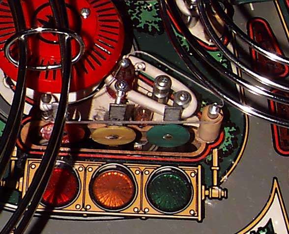

Checking the fit of the newly cut plastic on the machine (High Speed).
Here's where I realized I had forgotten to remove the unnecessary second hole toward the top of the plastic and, more importantly, to cut the slot for the right post. D'oh! The second part is easy enough to fix, anyway.
Entire article and photographs copyright © 1998 Dan Wilga. All rights reserved. May not be reprinted without permission.